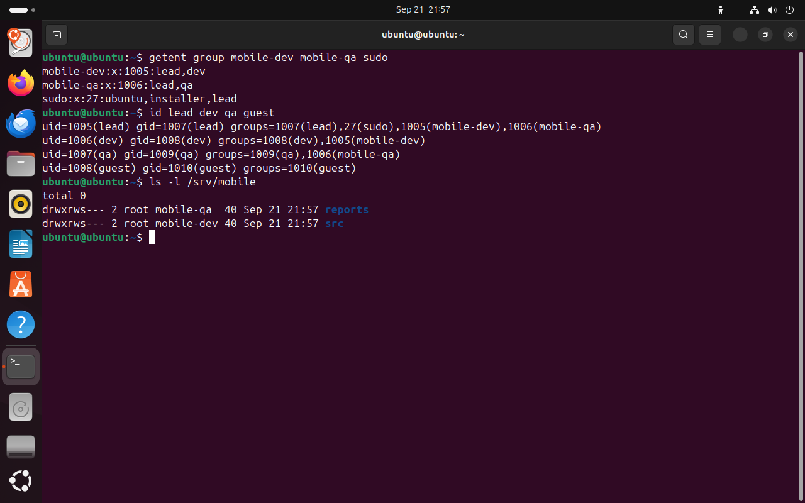
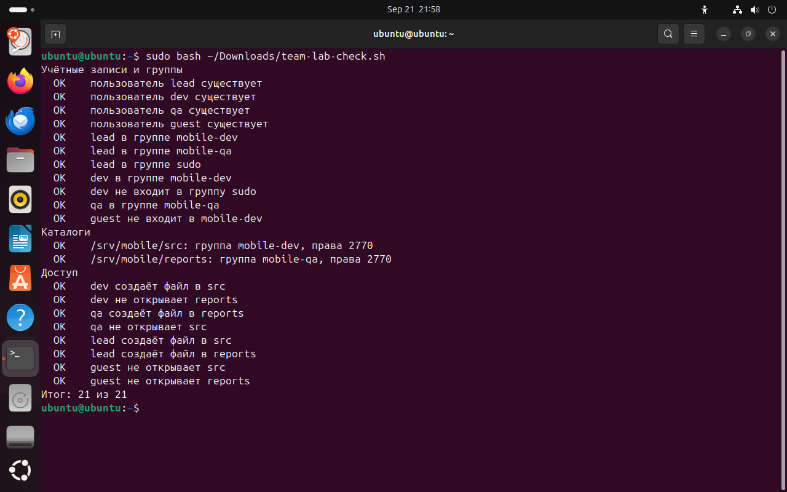
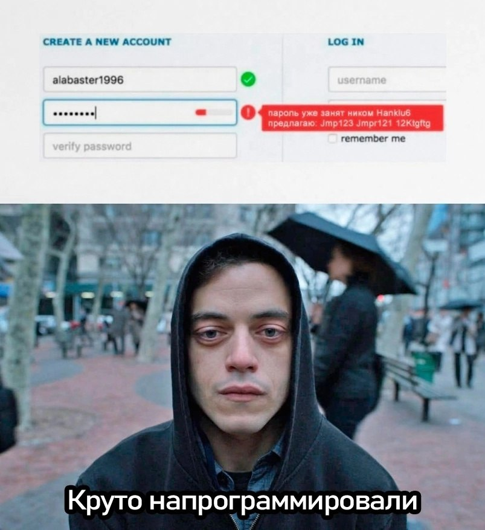

Часть 7 из 7
Практическая работа · Модель доступа команды mobile-app
В этой части построим модель доступа для команды мобильного приложения: четыре роли, две группы, два общих каталога. Результат проверим таблицей тестов доступа и скриптом.
7.1 Роли и схема доступа
Команда разрабатывает мобильное приложение. В ней руководитель разработки, разработчик, тестировщик и внешний сотрудник, которому доступ к проекту не положен. Исходный код лежит в /srv/mobile/src, отчёты тестирования — в /srv/mobile/reports. Каждая роль получает только те группы, которые нужны для её работы: так выполняется принцип минимальных привилегий из части 4.
- lead
руководитель разработки: работает с кодом и отчётами тестирования, администрирует сервер
mobile-devmobile-qasudo - dev
разработчик: пишет код в
mobile-devsrc, отчёты тестирования ему не нужны - qa
тестировщик: пишет отчёты в
mobile-qareports, код не меняет - guest
внешний сотрудник: доступа к каталогам проекта у него быть не должно
только личная группа
| Каталог | Группа | Права | Кто работает |
|---|---|---|---|
/srv/mobile/src | mobile-dev | 2770 · drwxrws--- | lead, dev |
/srv/mobile/reports | mobile-qa | 2770 · drwxrws--- | lead, qa |
7.2 Задания
Задания выполняются в виртуальной машине от имени пользователя из группы sudo. Перед началом сделайте снимок состояния виртуальной машины в VirtualBox: если в группах или правах запутаетесь, к нему можно вернуться.
| № | Задание | Подсказка |
|---|---|---|
| 1 | Создайте группы mobile-dev и mobile-qa. | groupadd |
| 2 | Создайте учётные записи lead, dev, qa и guest с домашними каталогами и оболочкой bash; задайте каждой пароль. | useradd -m -s, passwd |
| 3 | Добавьте пользователей в группы по схеме ролей. lead добавьте ещё и в группу sudo. | usermod -aG; группы можно перечислить через запятую |
| 4 | Создайте каталоги /srv/mobile/src и /srv/mobile/reports, назначьте им группы mobile-dev и mobile-qa и права 2770. | mkdir -p, chgrp, chmod |
| 5 | Заполните таблицу тестов доступа: для каждого пользователя выполните ls и touch в обоих каталогах через sudo -u и запишите результат. | ожидаемый результат впишите до запуска команды |
| 6 | Запустите проверку sudo bash team-lab-check.sh и добейтесь результата 21 из 21. | скрипт в материалах занятия |
| 7 | Войдите как guest через su -, попробуйте выполнить sudo whoami и найдите запись об отказе в журнале. | journalctl -t sudo |
| 8 | Объясните в отчёте, почему постоянная работа под root опасна. Приведите три примера из занятия. | часть 4, раздел «Принцип минимальных привилегий» |
Таблица тестов доступа — результат задания 5. Ожидаемый результат записывают до запуска команды, затем сравнивают с фактическим. Если они не совпали, в схеме или в правах ошибка.
| Пользователь | Команда | Ожидается | Получено |
|---|---|---|---|
| dev | sudo -u dev touch /srv/mobile/src/main.kt | разрешено | … |
| dev | sudo -u dev ls /srv/mobile/reports | Permission denied | … |
| qa | sudo -u qa ls /srv/mobile/src | … | … |
| … | … | … | … |
7.3 Проверка результата
Скрипт team-lab-check.sh проверяет учётные записи, группы, права каталогов и доступ от имени каждого пользователя. Пробные файлы, которые он создаёт, скрипт сразу удаляет. Запускается скрипт через sudo, потому что проверяет доступ от имени других пользователей.
getent group mobile-dev mobile-qa sudo# участники группчто делает
Что делает команда. Выводит строки трёх групп со списками участников.
По частям:
getent- получить запись из системной базы данных
group- база групп
mobile-dev- какая запись
mobile-qa- какая запись
sudo- какая запись
id lead dev qa guest# группы каждого пользователячто делает
Что делает команда. Выводит номера и группы четырёх пользователей команды.
По частям:
id- вывести номера пользователя и его группы
lead- чей номер показать
dev- чей номер показать
qa- чей номер показать
guest- чей номер показать
ls -l /srv/mobile# группы и права каталоговчто делает
Что делает команда. Выводит каталоги проекта с группами и правами.
По частям:
ls- вывести содержимое каталога
-l- подробный список: права, владелец, группа, размер
/srv/mobile- что показать (абсолютный путь)
sudo bash ~/Downloads/team-lab-check.sh# проверка по 21 пунктучто делает
Что делает команда. Запускает скрипт проверки с правами root: он проверяет записи, группы, права и доступ каждого пользователя.
По частям:
sudo- выполнить команду от имени другого пользователя, по умолчанию root
bash- запустить оболочку bash и выполнить команды из файла
~/Downloads/team-lab-check.sh- файл скрипта (путь от домашнего каталога)
- 1участники mobile-dev: lead и dev
- 2lead состоит в группе sudo
- 3у guest только личная группа
- 4каталоги принадлежат группам команды
{kind=link}

Весь снимок ↗Группы и каталоги эталонного решения.
Что показывает снимок. У каждой роли свой набор групп; lead состоит в sudo; каталоги проекта принадлежат группам mobile-dev и mobile-qa.
Где это пригодится. Сравните вывод своих команд с эталоном: группы и права должны совпасть.
{kind=link}

Весь снимок ↗Результат проверки эталонного решения.
Что показывает снимок. Скрипт проверил учётные записи, группы, права каталогов и доступ каждого пользователя и вывел «Итог: 21 из 21».
Где это пригодится. Если какой-то пункт выводит НЕТ, найдите по названию пункта, что не совпало со схемой ролей.
7.4 Уборка после работы
Учебные учётные записи после сдачи работы удаляют: лишняя учётная запись с паролем — лишняя возможность войти в систему. Команда userdel принимает одно имя, поэтому для нескольких записей удобно использовать цикл for: он выполняет команду для каждого имени из списка по очереди.
- 1Проверьте, какие записи будут удалены:
id lead dev qa guest anna boris. - 2Удалите записи с домашними каталогами:
for u in lead dev qa guest anna boris; do sudo userdel -r $u; done. - 3Удалите группы:
sudo groupdel mobile-dev,sudo groupdel mobile-qa,sudo groupdel devteam. - 4Удалите каталоги после проверки содержимого:
sudo ls -R /srv/mobile /srv/devteam, затемsudo rm -r /srv/mobile /srv/devteam.
Итоги части 7
- Роль определяет группы пользователя; каталог проекта принадлежит группе и закрыт для остальных.
- Таблица тестов доступа сравнивает ожидаемый и фактический результат для каждого пользователя.
- Права sudo получает только тот, кто администрирует систему.
- Учебные учётные записи удаляют после работы.
В отчётСхема ролей и групп, таблица тестов доступа, снимок проверки и объяснение про работу под root.
Что сдать
Отчёт README.md с девятью снимками экрана и таблицу тестов доступа access-tests.md по шаблону из материалов. Номера UID и GID в вашей системе будут отличаться от снимков урока.
| Снимок | Тема | Что написать под снимком |
|---|---|---|
01-id.png | Учётная запись | Подпишите семь полей своей строки /etc/passwd. |
02-shadow.png | passwd и shadow | Почему shadow закрыт для остальных пользователей. |
03-groups.png | Группы | Где основная группа, где дополнительные. |
04-sudo.png | Правила sudo | Какое правило даёт вам права администратора. |
05-team.png | Команда mobile-app | Совпадают ли группы со схемой ролей. |
06-dirs.png | Каталоги проекта | Что означает каждая цифра в 2770. |
07-access.png | Тесты доступа | Результаты таблицы тестов доступа. |
08-check.png | Проверка | Итог проверки; какие пункты потребовали исправления. |
09-denied.png | Отказ sudo в журнале | Кто, когда и какую команду пытался выполнить. |
Критерии оценки · 10 баллов
- 2учётные записи и группы созданы по схеме ролей — задания 1–3
- 2каталоги проекта: группы и права 2770 — задание 4
- 2таблица тестов доступа: ожидаемый и фактический результат — задание 5
- 2проверка 21 из 21 и запись об отказе в журнале — задания 6–7
- 2объяснение, почему постоянная работа под root опасна, с тремя примерами — задание 8
По каждому пункту: 2 балла — результат получен и объяснён, 1 — результат без объяснения, 0 — результата нет или объяснение неверное.
Перед сдачей
Отмечено 0 из 5
Домашнее задание · занятие 5
Максим Николаевич не хочет задавать домашнее задание. Но очень хочет

Модель доступа своего проекта
Возьмите проект, над которым вы работаете или хотели бы работать, — сайт, бот, мобильное приложение — и составьте для него модель доступа в файле access-model.md.
- Четыре роли, для каждой — учётная запись, группы, каталоги, что роль может и чего не может.
- Каталоги проекта в
/srvс группой и правами числом и буквами. - Скрипт
setup-team.sh, который создаёт группы, пользователей и каталоги. Запустите его в учебной виртуальной машине и приложите выводidдля каждого пользователя иls -lкаталогов. - Пять строк таблицы тестов доступа с ожидаемым и фактическим результатом.
Порядок сдачи
- Файлы
labs/lab04-users/в репозиторииos-linux-course:README.mdсо снимками,access-tests.md,access-model.md,setup-team.sh. - Ветка и PRветка
lab04-users, Pull Request вmainс названием «Пользователи, группы и sudo». - Срокдо начала следующего занятия.
- Критериипрактическая работа — 10 баллов по критериям выше; модель доступа принимается, если скрипт выполнен в виртуальной машине и вывод приложен.
- ИИнейросеть можно попросить причесать формулировки и оформить таблицы в
.md— я сам так делаю всегда, поэтому и вам запрещать не буду. Команды и вывод — только из вашей виртуальной машины.